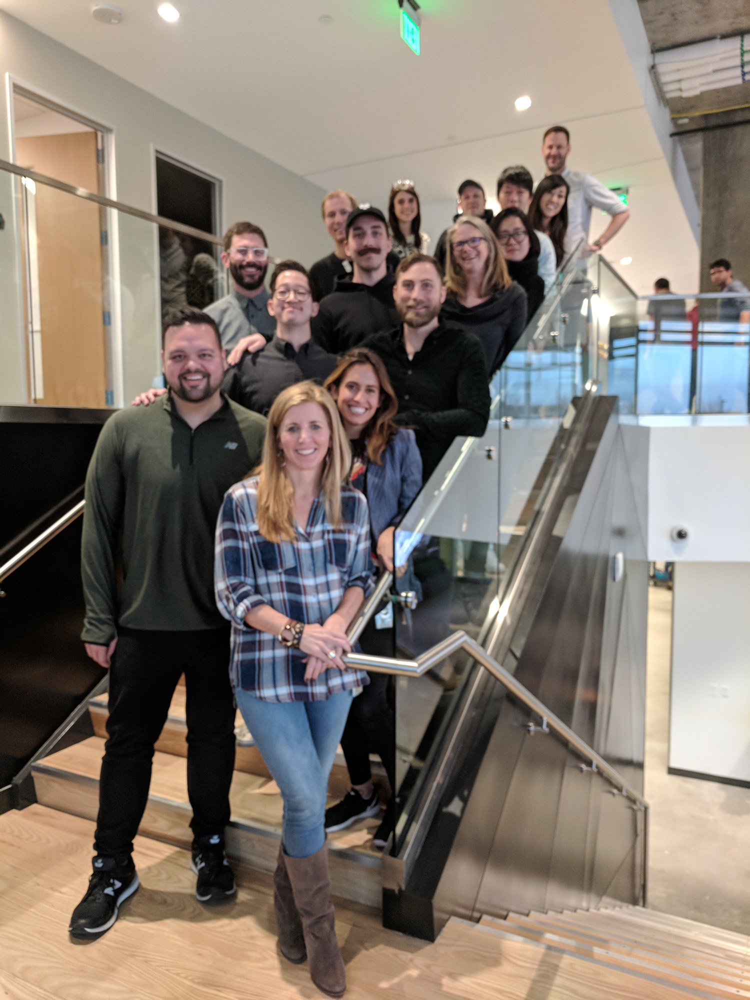
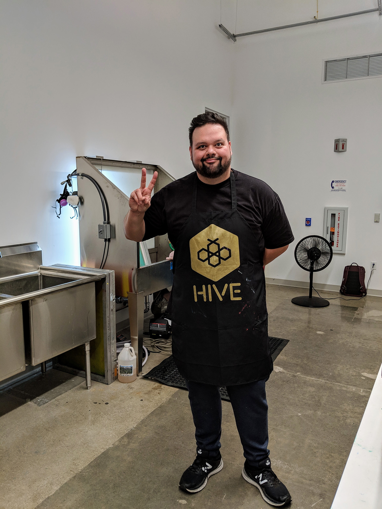
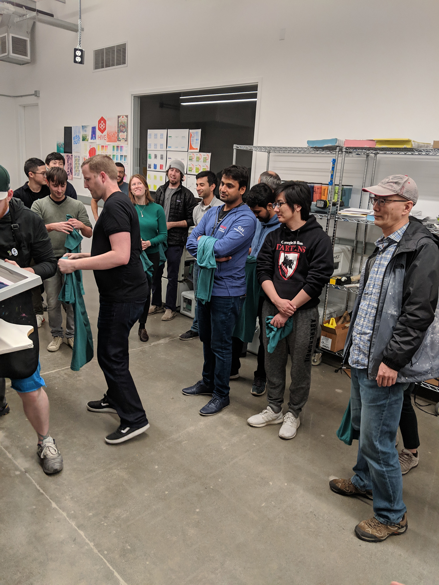
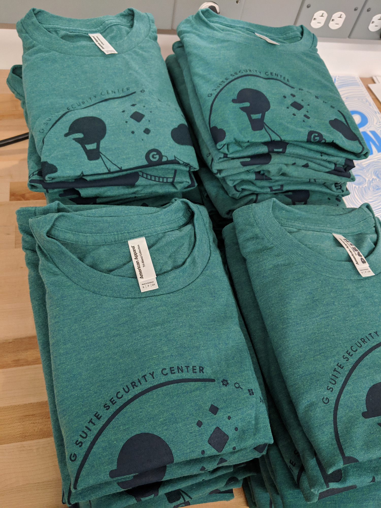
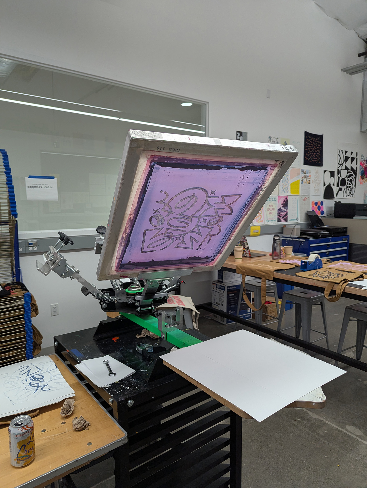

Building great teams. Making great things.

HubSpot: Customer Journey Activation.
HubSpot | 2025 – Present
Leading from the front — building things, not just directing them.
The most effective design leaders right now stay close to the work — not just reviewing, but making. At HubSpot, I've built a practice of using AI to prototype strategic direction and share it with the team before the conversation is even finished. When your team sees you making, they make too. Building and rebuilding the team to match that standard has been the other half of the job.
- Leading by making. Instead of communicating vision through briefs or decks, I use Claude Code, Gemini, NotebookLM, and other AI tools to prototype how I think a future experience should work — then share it, get feedback, and iterate fast. This compresses the gap between strategy and execution and sets the standard for how I expect everyone on the team to operate.
- Performance management first. I approached underperformance conversations directly and with documentation — giving people a fair opportunity to improve while protecting the team's health and momentum. No surprises.
- Strategic hiring. Rebuilt the team's composition targeting both craft and collaborative instincts. Design teams work best when the people in them actually want to learn from each other.
- AI-forward culture. Created an internal Claude Code onboarding program to get designers building with code and AI, not just designing around it. Introduced GitHub Pages hosting workflows so the team could ship and share prototypes without engineering dependencies. Integrated Figma MCP to connect our design tools directly to AI workflows.
Shipped HubSpot's first Agentic Setup experience.
Agentic Setup
Customer activation was our team's primary metric — getting new HubSpot users to a point of meaningful engagement with the product. The traditional onboarding flow was manual, form-heavy, and created significant drop-off. We designed a fundamentally different approach: a conversational UI powered by a suite of specialized sub-agents, each responsible for a distinct step — from building the user's CRM pipeline and configuring properties to capturing goals and beyond. The system proactively builds CRM objects as the conversation progresses, dramatically reducing the manual setup burden.
The Challenge
LLM-powered conversational UIs are non-deterministic by nature — the same input won't always produce the same output. Launching this meant confronting a fundamental mindset shift across the team: accepting that some variation in the agent's language wasn't a bug to fix, but an inherent property of the technology we were building on. An agent might choose a word we'd never have approved in a traditional spec, and that had to be okay.
How We Solved It
I created new bug severity criteria using AI — ingesting feedback from early launches alongside external sources and my own judgment to build a framework the whole team could anchor to. The key distinction: substance deviations were blockers; language variation was acceptable. This gave us a shared standard for fast prioritization and confident decision-making under an aggressive launch timeline.
Increase in customer activation
Payments Platform Buyflows: what worked well?
Payments Platform Buyflows
Created a culture of sharing and trust through:
- Weekly design jams. Hosted to get the team sharing work early and often to get feedback. Encouraged clarity around the type of feedback desired and then capturing action items.
- Sprint retros. Actually recommended by a designer on my team, we started doing a retro meeting to discuss how the last 2 weeks of work went for everyone. Definitely a time to connect, share problems and solutions, and give shoutouts to teammates.
- Sprint planning. We broke our work down into 2-week blocks and met at the beginning of each sprint to get aligned on what everyone was working on, level set on our approach to projects, and share any announcements.
- Rolling project updates. I encouraged folks to keep a rolling deck or document of each project. This helped track progress of work over time with all of the reviews, feedback, action items, and progress in one place.
- Newsletters. These email newsletters increased the visibility of our work to the larger Payments organization and allowed people to give feedback and ask questions.
- Making together. We utilized a maker space at Google to do screenprinting workshops to make our own swag like t-shirts and tote bags. A great way to get the team together, flex some design muscles, and create something together.
Systems thinking
Shifted my design team's approach to systems design by:
- Asking for solid rationale. When I joined the team things were moving fast and several designers didn't have strong rationale for their design decisions. As I asked for strong rationale, the team delivered and it strengthened their designs.
- Pushing for a principled approach. To help guide the team in decision making we drafted principles for the buyflow experience that we could all agree on — making it easier to mitigate designs that went against what we had agreed on.
- Reducing complexity and one-offs. New things are awesome when the problem calls for it, but sometimes an existing component will actually address the problem. Adding new elements into the system always increases complexity.
- Audits and competitive analysis. While we can't always know if a competitor's pattern is successful, we can at least get a sense for what users might be familiar with. Stakeholders are also always interested in what competitors are doing.
- Pressure testing. I had designers take patterns they were designing and apply them to other experiences in Platform to see how their design might scale, or break, in other scenarios with different constraints.
- Design system contributions. I always had the team contribute new components and patterns to the design kit. The bar for contribution was high — a great exercise in systems thinking as designers had to account for behavior, states, and variants.
Career growth
Shipped products and fostered career growth by:
- Strategic project assignment. I assigned projects strategically based on opportunities to grow in a certain area, individual strengths, and opportunities for impact for someone nearing promo.
- Getting XFN commitment. Getting xfn buy-in for strategic changes during the planning cycle was critical. People's bandwidth is limited and there are already commitments on the books, so you've got to get aligned early.
- Timely feedback. No surprises. Feedback should always be timely and specific. Low performance feedback is much better received when it's close to the event. People shouldn't be surprised by a bad performance rating.
- Setting clear expectations. People need a clear standard with examples to compare their performance against. Performance shouldn't be about a subjective perception — it should be objectively compared to agreed-upon expectations.
Payments Platform Buyflows: lessons learned.
Payments Platform Buyflows
Let's just say the lessons were plentiful but here are some key examples:
- Working in silos doesn't work. You can do amazing work, but if you're not 100% aligned with xfn folks to push things through to launch then you're wasting your time. We had to shift our approach to running more incremental experiments that aligned with our PM partners' risk tolerance.
- Consumers can say one thing and do another. In our research we found that users would say one thing, but when we went to test something quantitatively we found a different result. Our research pivoted to focus more on larger sample sizes for qualitative research and very region-specific qualitative studies.
- Be ready to show and tell. At any given moment, be able to efficiently communicate what your team is doing, why they're doing it, how it's going, and what impact they're having. Assume that no one outside of your team knows what's going on and probably doesn't have time to care until something is on fire.
Workspace Security & Control: what went well?
Workspace Security & Control
- Grew the team quickly. I was able to build a team quickly in a rapidly evolving space. In just one year I more than doubled the size of the team from 3 to 7. Security became a key focus for Google Workspace, especially as the organization was landing bigger clients.
- Exponential impact. Many of the products we brought online were a direct result of our conversations with users and customers. The exponential impact came from how we connected the products together — an alert could turn into a query that could lead to an action, a query result could turn into a dashboard that is monitored, changing policies that then trigger new alerts.
Workspace Security & Control: lessons learned.
Workspace Security & Control
I needed to cut my teeth as a manager in very little time.
- Managing managers. I had to be more intentional about staying connected with the larger team since I was one management level removed from some folks. Things that helped: skip level meetings, being at reviews, and asking about people's teams.
- Dealing with egos and drama. I had to deal with someone on my team who caused quite a bit of drama with the people they worked with. I needed to work to smooth out situations created by this person who always thought they were the smartest person in the room.




